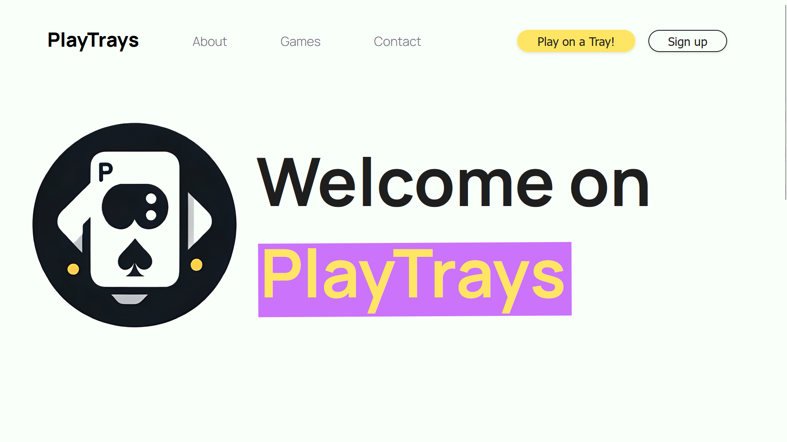
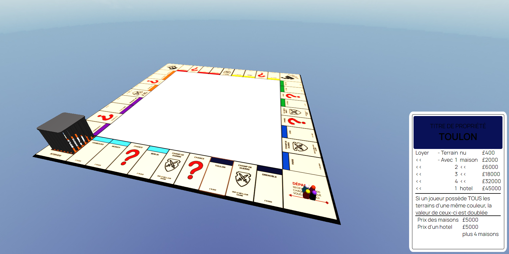
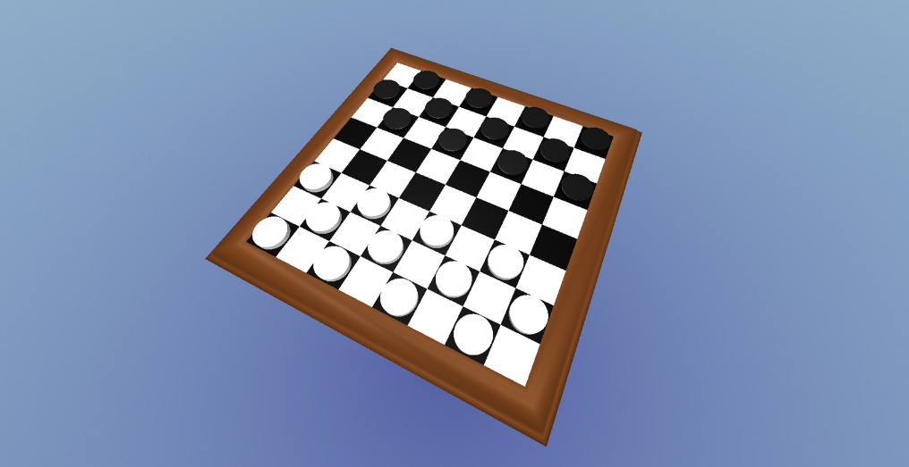
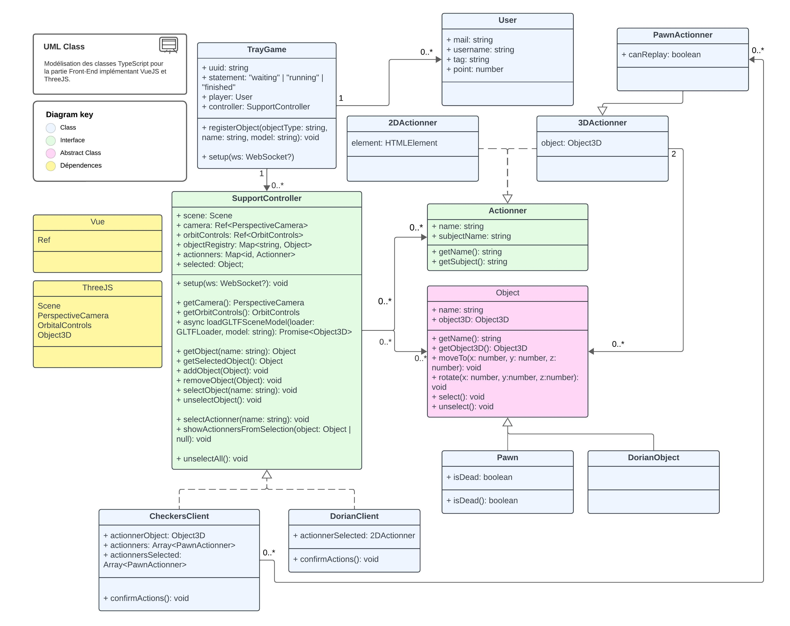
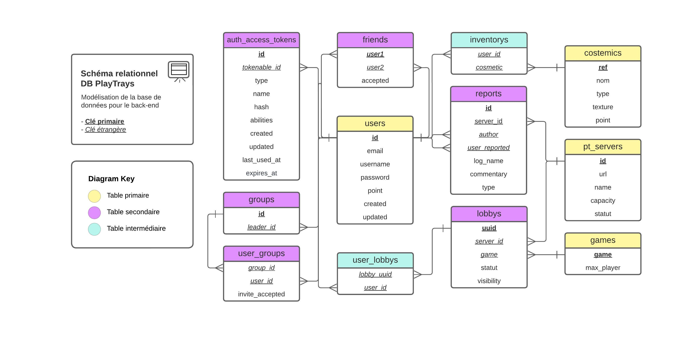

Copyright (C) Majurax Portfolio Corporation. All rights deserved.
C:\Users\Majurax> dir My_projects
Directory of C:\Users\Majurax\My_projects
January 2024
September 2023
May 2024
September 2023
Chicken coop
Creation of a binary classification IA
Playtrays
Redaction on the topic: How does IA works
Chicken Coop - NotePad
File
Edit
Search
Help
The chicken coop:
A school project by me and 4 other people.
The Chicken Coop is a new way to take care of your chickens. It is a software and hardware combination that integrates AI, Raspberry Pi, Python, and some building skills.
The project began at Polytech, my school. My group and the rest of the class were assigned various work proposals. These proposals varied from chemical to mechanical projects.
Unfortunately, none of these projects included informatics, which was problematic for our group since we all wanted to pursue that direction in our academic paths.
That's why we started looking for projects where we could incorporate informatics. We saw a great opportunity with the following project:
Build a chicken coop that prevents pests from coming in.
We decided to go beyond the issue of pests. Why only prevent pests when larger animals could still enter and cause significant trouble? That's why we decided that anything that isn't a chicken should be stopped from entering.
Our idea was to create an AI that could detect the presence of chickens and block other animals from entering.
We wanted the chicken coop to be useful even without power so that the primary issue would still be addressed.
We started with a big meeting among the group to discuss task distribution and begin thinking about the design.
We agreed on the following idea:
We would install a Raspberry Pi, a camera, a presence detector, and some magnets. The detector would trigger the camera, which would send the photo to an AI in the Raspberry Pi. If a chicken was detected, the magnets would turn off, allowing the door to open.
Some of us wanted to create the AI individually, but the time given was too short for us to address all the problems. Although we had the capability to create an AI, we couldn't do it due to a lack of a sufficient database (only 300 images were harvested to train the AI, which wasn't enough).
To work around this problem, we used a classification AI from Google that can label a vast number of objects in an image. We just had to check the labels for the presence of chickens.
Once the software and hardware were ready, we just had to build it. This part was a little tricky since we were almost at the project deadline. We managed to build it within 3 days. Then we conducted tests with all the hardware installed:
Chicken Coop - NotePad
File
Edit
Search
Help
My first AI:
Chicken Coop - NotePad
File
Edit
Search
Help
Playtrays:
My second-year final project.
This project aimed to have us work in groups on a large-scale project. We were instructed to create a website.
We opted for a site that grouped various board games: Playtrays

Play Trays is a site designed to recreate the feeling of playing a good board game with others. To do this, the site uses 3D to allow the user to move around the board as they would in real life.


I took care of the database modeling and UML with one of my classmates.


This work allowed me to become familiar with HTML, CSS, TypeScript, and some of its libraries, mainly THREEJS.